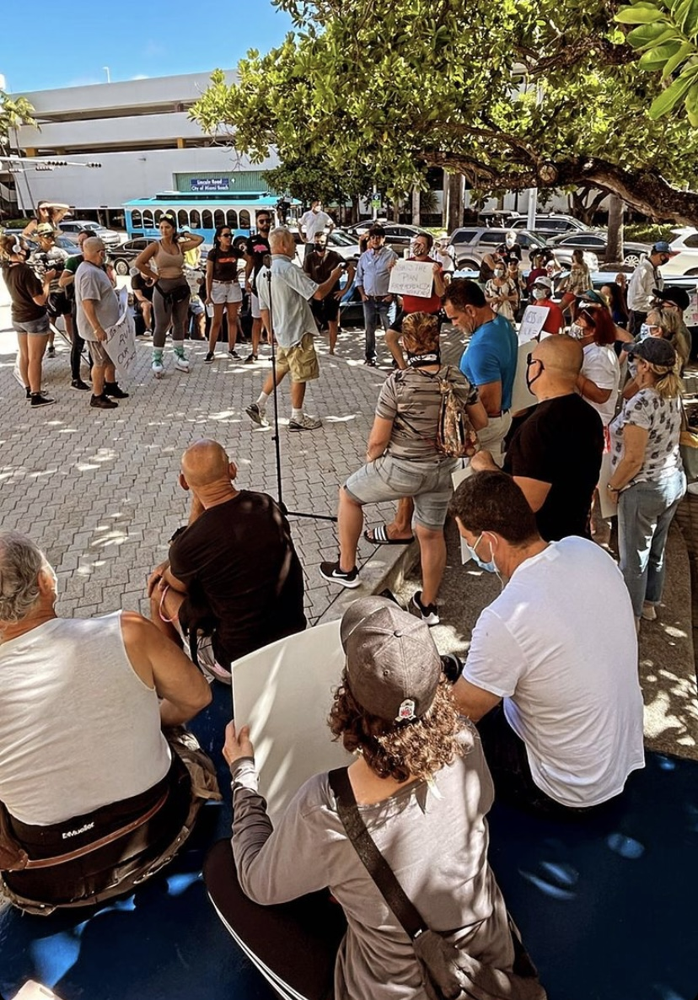
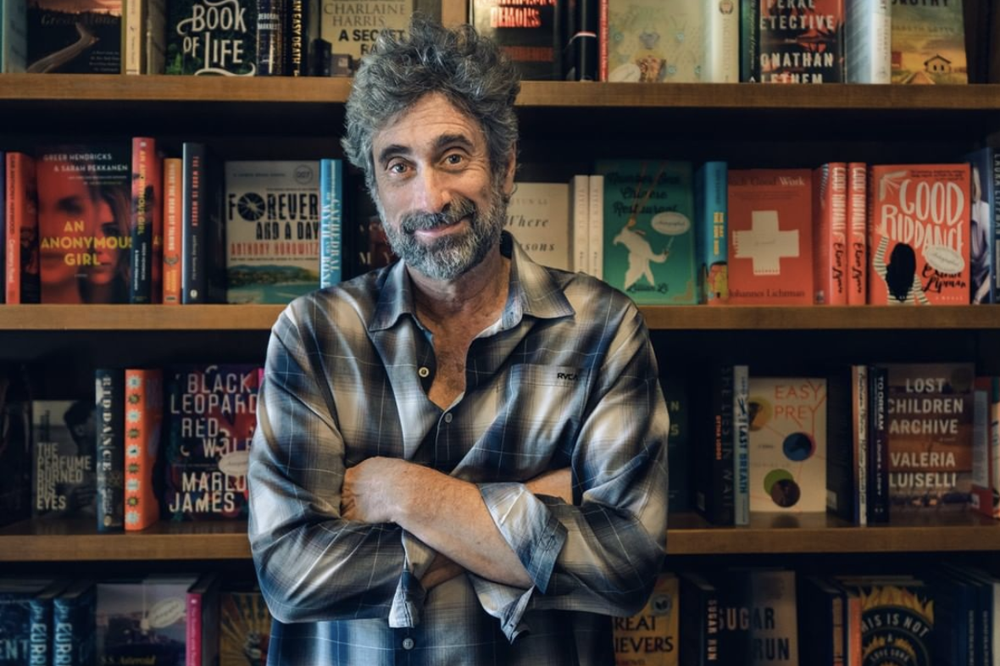

Hello and welcome to my page! Thank you for stopping by :)
I am a grateful student at the University of Miami completing a Bachelor's
degree in Electronic Media Production with minors in Broadcast Journalims and Theater Arts.
I love getting to know people, their experiences, and their goals. I want to get to know the fellow members of communities
near me and I aim to explore the world around me. Weather it'd be news reporting, electronic media production,
multimedia journalism, customer service. I am always hungry for a new experience.
I am currently a senior student and part of the Miami Heat Organization a
a Mobile Support Specialist.My next goal is to grow as much as I can with the HEAT organization and eventually
make my way into the Broadcast Team Department. I want to produce content, conduct player interviews,
assist with marketing ads, and anything related to broadcasting so I can continue to grow as a producer
and assist with new projects.
Yearly Experience
Organization
Time
UMTV
2018-Present
TMH
2021-Present
Miami Heat
2021-present
UMTV
I've had the wonderful opportunity to report for UMTV, which is the University
Miami's award-winning, student-run television station. I've directed, written, produced, and
shot content for Unimiami which is the one and only Spanish-language program on UMTV.
Aside from on camera work, I also have over 3 years of experience working behind the scenes
with some of the other shows on campus including SportsDesk, Newsvision, and Off-The Wire,
My experience is as follows:
Unimiami
Associate Producer, Anchor, Reporter
Create rundown using ENPS
Assist excecutive producers with directing bi-weekly 15 minute pre-taped show
Copy-edit, and translate talent scripts
Record segments on Grass valley K2 Server
Edit packages and final show on Adobe Premiere
Cover stories on and off campus and highlight the diverse culture of Miami
Interview students, residents, and tourists and capture their perspectives on different topics
Create packages using Sony Z150 and Canon EOS 5D Mark IV
Coach talent on ways to imporove
Reach out to potential musical guest for in-studio performances
Front and Tag packages in studio
SportsDesk, Newsvision, OFF-The Wire
Production Crew Assistant
Technical Director and assistant editor for IGTV Segment series on SportsDesk
Audio Operator
Turn in packages covering digital news stories
Operate in-studio cameras, prompters, and green screens for weather
Field produce live shots using Dejero Box
Assist on-air talent with scripts
Assist with voice-overs when needed
Coach talent on ways to imporove
Reach out to potential musical guest for in-studio performances
Skills
Adobe Premiere Pro
Photoshop, Lightroom, Audition
AP ENPS
Grass Valley Summir Server
Grass Valley Cameras
Grass Valley Karrera Switcher
Proficient in Instagram, Youtube, Facebook, Snapchat
Aside from on camera experience, I've contributed to the student newspaper
from UM. I've had the chance to interview students and tell their stories and cover off
campus news such as guest speakers at UM or the recent chain of events that
took place in Miami Beach during Spring break. I love finding new opportunities to learn from other people
that can help me grow mentally, academically, and creatively.
Below are some of my most recent work with The Miami Hurricane

When the party’s over: Locals disgruntled by weeks of spring break chaos. Photo courtesy
of Miami Beach Resident Nick D'Annunzio (Source:The Miami Hurricane.)

What Matters to U welcomes Books & Books founder Mitchell Kaplan, Photo courtesy of Mitchell Kaplan Twitter @mitchellakaplan (Source:The Miami Hurricane.)
Climate
An LGBTQ+ living learning community will house its first residents next fall. Photo courtesy
of UM LGBTQ+ Student Center(Source:The Miami Hurricane)
MIAMI HEAT Digital Fan Expert
As part of the A-team, my goal is to provide fans with
the ultimate digital fan experience and offer help with digital ticketing, HEAT mobile
application, and help increase digital fan engagement on game days.
Experience
Assist and engage with fans by using and troubleshooting all functions on the Miami HEAT app
Guide fans on Digital Ticketing, Mobile Entry, and Wallet signup pregame
Attend all home games to ensure a smooth entry and fun fan experience
Help improve the mobile expereience by providing ideas and feedback to make improvements across the organization
Focused on making sure every guest takes advantage of Miami HEAT's mobile/digital offerings